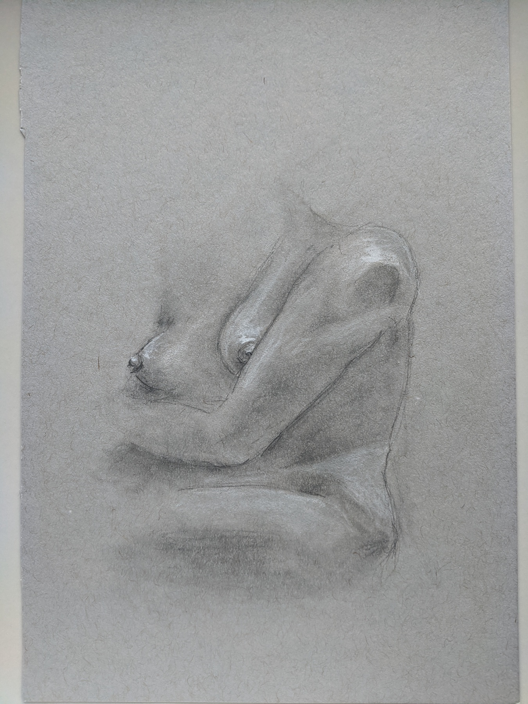
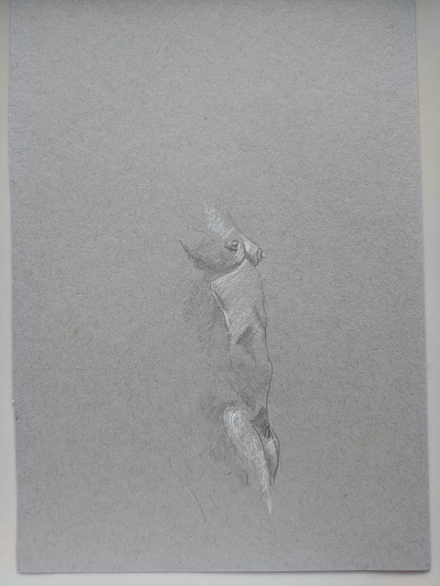
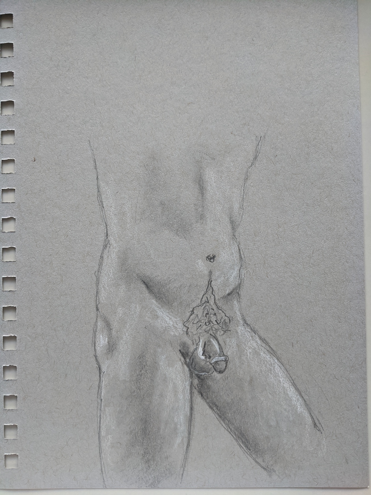
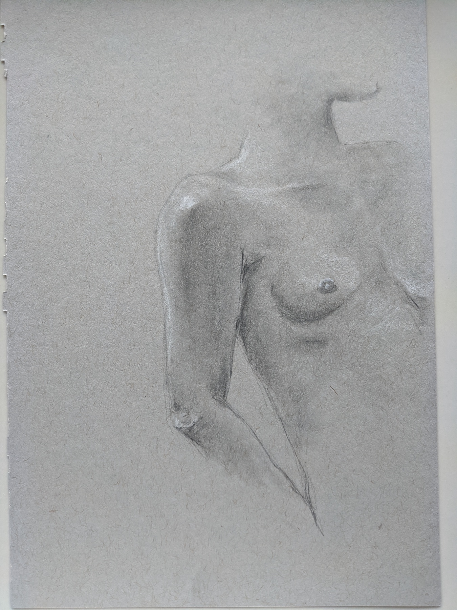
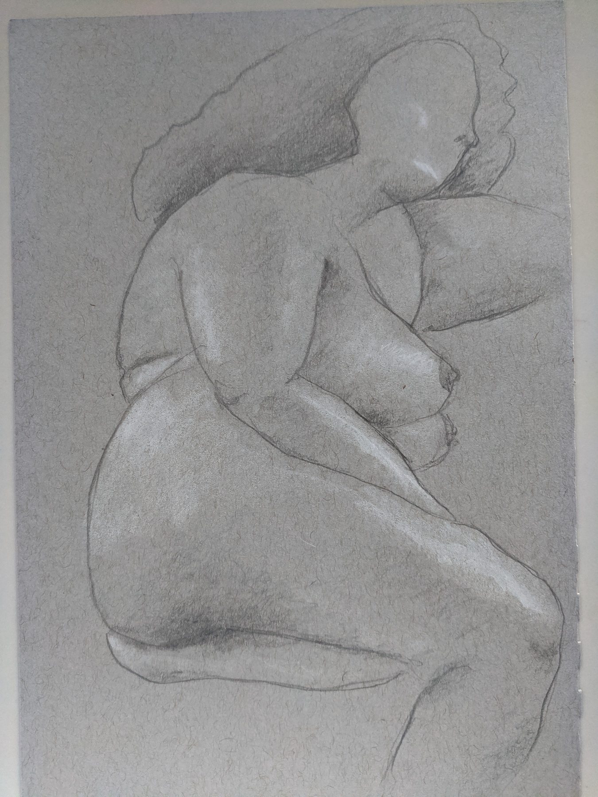
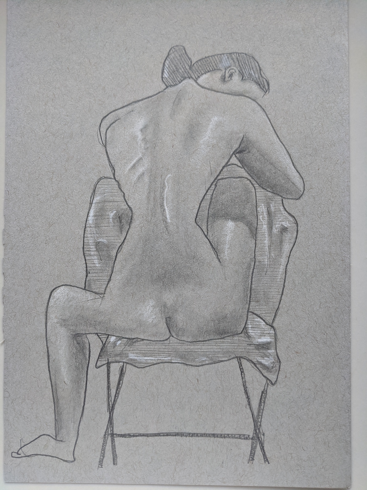
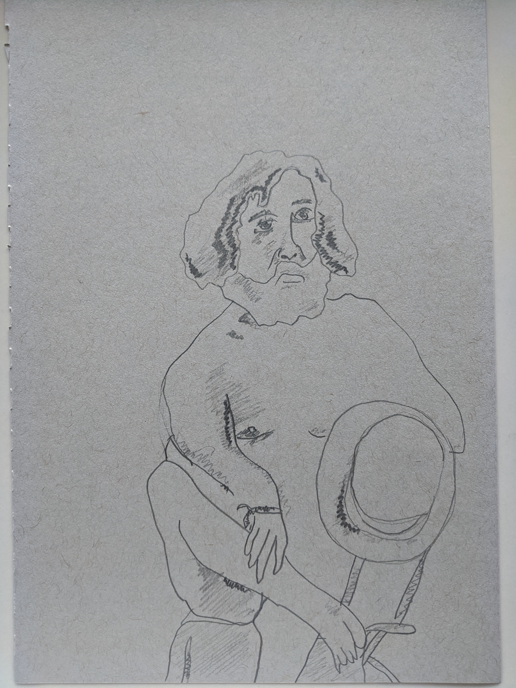
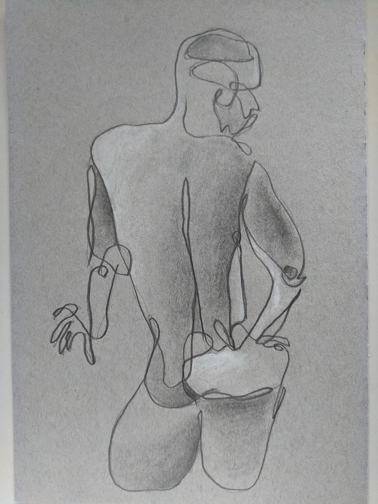
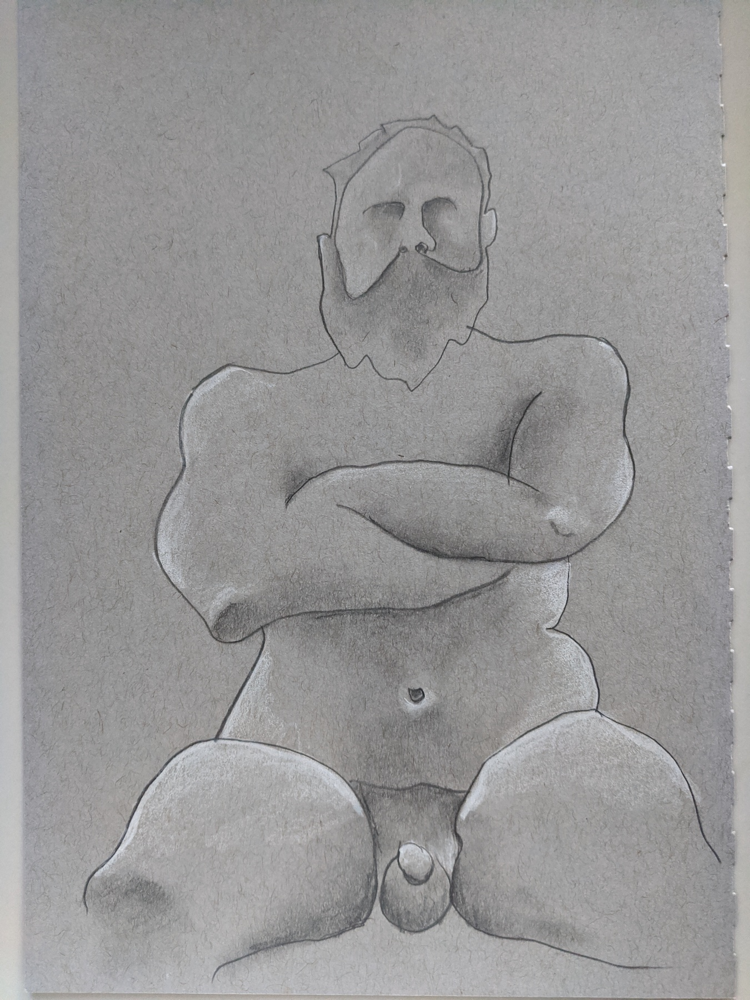
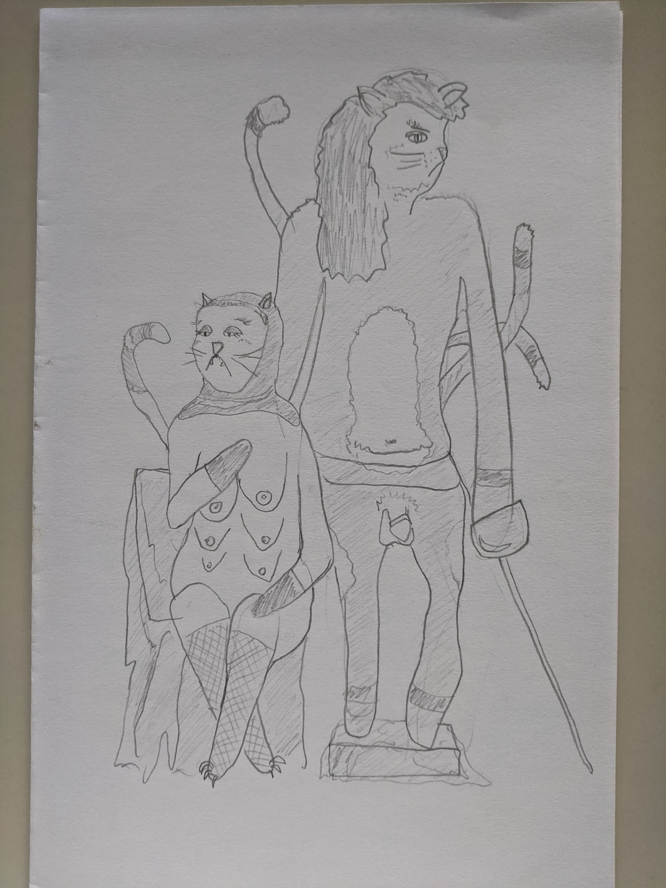

Nick Cassleman - Figures from Drink n' Draw
After college, I moved to New York to "find my fortune." During my time living in Brooklyn, I spent a couple of years attending a weekly figure drawing session called Drink n' Draw. It happened every Wednesday at the Bat Haus off the Jefferson stop on the L train. $20 got you 2.5 hours with a live model and unlimited cans of beer from our sponsor, Brooklyn Brewery. What a steal!
I've never been taught how to draw. I took an art class in college with the performance artist Pope.L, but the day we were learning about Line, we had to partner up with someone and do an interpretive performance instead of, you know, learning how to draw a line.
My drawings have improved over the years with inconsistent practice, but I still don't really know what I'm doing. I got some advice "just draw what you see," so I think my goal is to learn how to better "see like an artist" and then develop some technique.
Context & relief
I was pretty shy during this part of my life, so I didn't make any friends there for about a year. Instead, I would sit quietly by myself and sketch the curtain while we waited for the session to start. I'd pick a spot in the back near the middle next to a handsome man with a beard and a name I've forgotten. I crushed over this straight man for months before attempting to strike up conversations that went no where. Eventually, I did make friends with two other regulars who are legit good at art: Anna Rosenfeld and Sara Sarmiento.
Line & gesture
Sessions began with 15 second gesture drawings. These came out better when I was confident with my lines and drew from the heart. I would describe these as "zazzy."
Shape & figure

After the gestures, we'd move onto a series of shorter poses. Again, when I didn't focus on details and drew with confidence, I liked my work better. I'd focus on proportions and do simple shading if at all. Things always went downhill when I attempted faces, hands, and feet. Boobs were always an easy place to start.
Form & depth





The sessions ended with longer poses and this is when I'd practice shading. I never felt like I got the hang of this because I wasn't really following a process; I just drew what I saw instead of trying to understand why I saw it. I'd be several beers in which I'm not sure hurt or helped. By this point, the line for the bathroom was tremendous, so I'd often skip one of the poses to avoid the discomfort of my drawing ineptitude by waiting in line.
Style & interpretation





I liked these stylized drawings the most because I could cover up my lack of technical expertise with my creative spirit. "It's supposed to look like that!" The guy that ran the event would walk around and take pictures of people's work to put up on the Instagram. It was everyone's secret wish to have their drawings photographed and I was proud the few times he used mine. I'm sure they fell into this category.